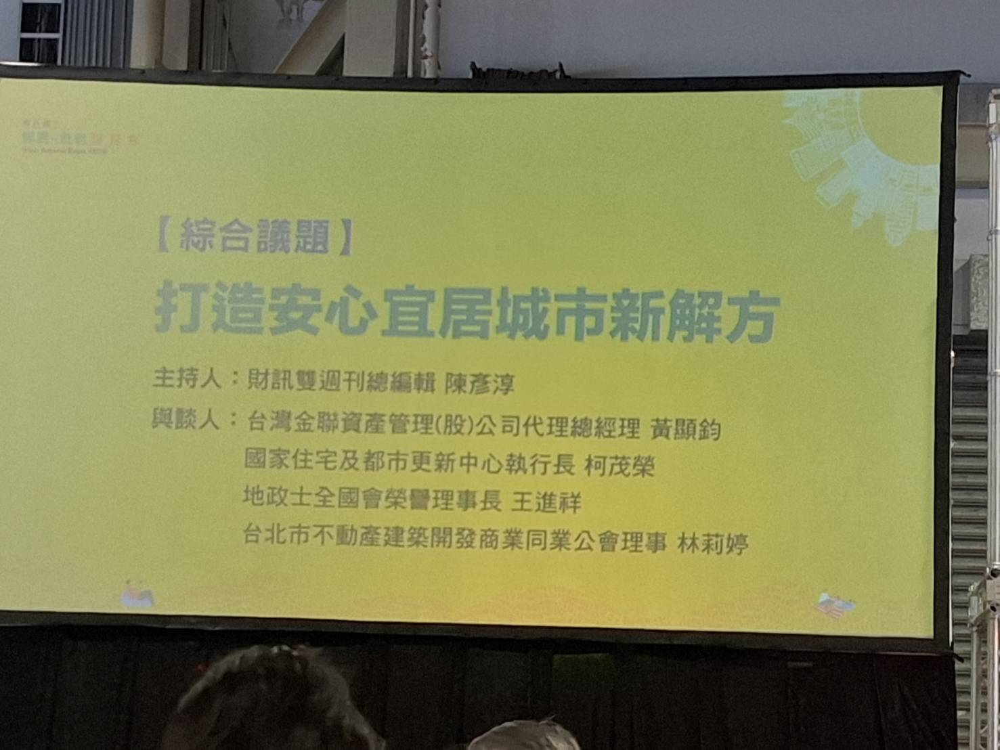
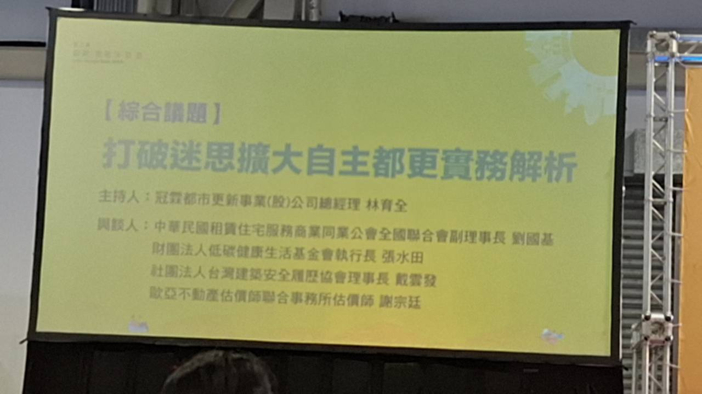

主題講堂與趨勢論壇三。
Urban Renewal & Senior Building Renewal Expo
第八屆都更危老博覽會主題整理
以「自主都更」為主軸，整理各種都更方式的特色、優缺點、演講重點、簡報頁面與補充資料，作為後續討論與查找資料的入口。

Event Snapshot
博覽會資料總覽
本頁把 PDF 教材、演講說明與補充資料分成主題入口，方便後續依議題查找，而不是只保留簡報截圖。
25頁＋35頁，已轉成網站縮圖。
轉成章節脈絡與思考題。
適合先建立概念，再對照簡報。
Renewal Methods
各種都更方式比較：特色、優點與限制
先把不同路徑放在同一張表裡看，才不會一開始就被單一提案或單一制度框住。自主都更是這次整理重點，但它仍需要和合建、公辦、危老、整建維護、老宅延壽一起比較。
| 方式 | 核心特色 | 優點 | 風險／限制 | 適合先討論的情境 |
|---|---|---|---|---|
| 自主都更／自主更新 | 所有權人保留較高決策權，透過更新會、專業團隊、全案管理與金融工具推動。 | 可避免只被單一建商方案帶著走；分配、規格、合作對象與風險條件較有主動判讀空間。 | 前期整合、專業費、融資、信託、會議程序與文件管理都要處理；若缺專業統籌，推動成本高。 | 社區有一定共識，願意建立代表機制，也願意用專業團隊做可行性與財務比較。 |
| 合建／建商主導 | 由建商帶入資金、規劃、施工與銷售能力，社區以土地或權利條件交換重建成果。 | 資金與執行壓力較少落在所有權人端；流程通常較有商業推動力。 | 需看清建商利潤、分配基準、車位、公設、履約保證、續建與資訊揭露；條件比較容易被簡化成坪數。 | 社區希望降低自籌資金與專案管理負擔，但仍要能看懂合約與分配條件。 |
| 公辦都更 | 由公部門或公辦平台介入，強調公共性、程序透明與都市政策目標。 | 公共信任度較高，適合基地複雜、公共利益高或需要公部門協調的案件。 | 程序、審議與政策目標可能較多，時程未必最快；個別所有權人的彈性可能較低。 | 基地牽涉公共設施、街廓再造、社會住宅、弱勢安置或高度公共利益。 |
| 危老重建 | 針對符合危老條件的建築，程序相對簡化，常被視為重建快速通道。 | 若條件符合、同意度高，程序可較快進入重建；適合安全急迫的老舊建物。 | 同意門檻、基地條件、獎勵期限、耐震評估與財務可行性仍要確認；不一定適合所有社區。 | 建物安全疑慮高、所有權人較集中、基地條件單純且重建共識高。 |
| 整建維護 | 不拆除重建，改善外牆、結構補強、管線、公共空間、設備與管理機能。 | 比重建干擾小，可延長使用年限，適合尚可延用但需改善安全與機能的建物。 | 改善幅度有限，無法解決所有權利分配或量體不足問題；若結構風險高，不宜只靠整建維護。 | 建物可延用，但外牆、管線、消防、無障礙、節能或公共空間需要改善。 |
| 老宅延壽 | 較偏向老屋機能復新與安全分流，作為修繕、補強、節能、無障礙或後續重建評估的入口。 | 可先處理急迫安全與生活機能問題，也能作為還沒有重建共識時的資料整理方式。 | 不是住戶目前主要需求，也不是重建替代品；仍要看耐震、補助核定、地方審查與實際修繕效益。 | 尚未形成重建共識，或需要先釐清屋況、安全、修繕負擔與是否要轉入危老/都更。 |
Topic Pages
依主題分頁閱讀
自主都更是這次整理的主頁級重點，放在總覽之後優先閱讀；智綠建築作為重建品質與長期價值的補充；老宅延壽目前不是住戶主要需求，移到後段作為背景資料。


閱讀方式
建議先依章節閱讀，再回頭對照完整簡報。逐字稿整理的用途是補足講者口語說明、提醒與判斷脈絡；PDF 則保留教材架構與原始頁面。
Learning Path
系統化學習路徑：PDF × 演講整理
以下按讀者理解順序編排。每一章都同時放入 PDF 對應頁面、演講整理重點與延伸思考，讓資料成為一套教材，而不是零散素材。
Program & People
場次與出席者整理
依現場補充照片與逐字稿整理。這裡列出主持人、與談人與各自可帶出的專業議題，方便回頭對照自主都更、權利分配、全案管理與智綠建築等頁面。
| 場次 | 主題 | 主持人／與談人 | 目前可整理出的主軸 |
|---|---|---|---|
| 主題講堂 | 都更不只換新屋：讓智慧綠建築提升家的性能與價值 | 楊謙柔博士；國立臺灣科技大學能源永續科技研究所助理教授、中華民國都更危老重建協會理事長。 | 從居住需求出發，把重建視為改善健康、舒適、能源、智慧管理與長期價值的機會。 |
| 趨勢論壇三 | 都更新常態：自主更新時代來臨 | 楊謙柔博士；簡報列示其都市更新、危老重建、淨零碳規劃、AI應用與智慧人居等跨域背景。 | 從政策與城市發展角度說明「人屋雙老」、老屋重建、危老快速通關、整建維護與社區自主判讀能力。 |
| 政策脈絡 | 人屋雙老與更新制度 | 演講中反覆提醒：重建討論不能只看建物新舊，也要理解人口結構、法規工具與社區決策成本。 | 可延伸檢視社區屋齡、權屬與使用組成、同意門檻、危老或都更適用性、整建維護是否也是選項。 |
| 專業協作 | 社區、專業者與實施者的分工 | 演講內容可整理出一個重點：社區討論需要能看懂條件、問對問題，並在重要階段引入專業協助。 | 可延伸討論是否需要估價、法律、建築、財務或第三方監督角色，以及費用如何分攤。 |
| 綜合議題 | 打造安心宜居城市新解方 | 主持人：財訊雙週刊總編輯陳彥淳。與談人：台灣金聯資產管理(股)公司代理總經理黃顯鈞、國家住宅及都市更新中心執行長柯茂榮、地政士全國會榮譽理事長王進祥、台北市不動產建築開發商業同業公會理事林莉婷。 | 台灣金聯全案管理與前期資金、住都中心政策與執行、地政士權利分配與登記專業、建築開發與發包後管理。 |
| 綜合議題 | 打破迷思擴大自主都更實務解析 | 主持人：冠蓋都市更新專業(股)公司總經理林育全。與談人：中華民國租賃住宅服務商業同業公會全國聯合會副理事長劉國基、財團法人崔媽媽基金會執行長呂水田、社團法人台灣建築安全履歷協會理事長戴雲發、歐亞不動產估價師聯合事務所估價師謝宗淮。 | 租賃與安置、居住照顧、建築安全履歷與全案管理、估價與分配爭議處理。 |

打造安心宜居城市新解方
補充照片列出主持人與四位與談人，對應本網站的全案管理、政策執行、權利分配與建築開發管理議題。

打破迷思擴大自主都更實務解析
補充照片列出主持人與租賃住宅、居住照顧、建築安全履歷、估價等專業與談人。
Talk Cards
兩場演講圖文表
這裡保留兩場演講的圖文入口；若要有系統閱讀，建議優先使用上一段的學習路徑。
Discussion Map
議題地圖
把博覽會演講內容轉成可閱讀、可比較、可延伸思考的表格，而不是只保留簡報印象。
| 議題 | 演講帶出的觀點 | 延伸思考 | 可形成的資料需求 |
|---|---|---|---|
| 自主更新 | 都市更新逐漸成為常態，社區不只被動等待建商提案，也可先建立自主更新的理解與判讀能力。 | 社區共識、代表機制與專業顧問是否足夠？是否能先做可行性評估？ | 所有權人名冊、土地建物謄本、基地條件、初步量體、財務試算。 |
| 智慧綠建築 | 重建不只是換新屋，也涉及能源、通風、健康、維護成本與長期價值。 | 新屋規劃是否只看坪數，還是納入節能、通風、隔熱、設備維護與資產價值？ | 建材設備表、節能規格、公設維護費、綠建築或智慧建築目標。 |
| 風險控管 | 更新過程涉及時間、資金、合約、信託、續建與資訊落差。 | 若進度延宕或建商財務出問題，誰接手、錢在哪裡、權利如何保護？ | 信託契約、履約保證、續建機制、法律審查意見。 |
| 價值判斷 | 更新後價值不只看權狀面積，也要看室內品質、樓層、車位、公共空間與營運維護。 | 新屋價值如何估？車位、公設、樓層、朝向、店面與補貼是否分項列示？ | 估價基準、分配表、車位辦法、共同負擔與找補規則。 |
Reference Index
重點索引與搜尋
本區作為查找補充使用；主閱讀順序仍以上方「系統化學習路徑」為主。可用關鍵字快速找到相關觀念，再回到對應章節與 PDF 頁面。
Original PDFs
PDF 原件內嵌閱讀
以下嵌入兩份簡報原件，方便讀者把整理後的知識點回頭對照原始簡報。
Reading Notes
閱讀提醒
先照章節讀
先看「系統化學習路徑」，用 PDF 頁面建立架構，再用演講整理理解講者提醒。
再回到社區
每個社區的基地條件、所有權結構、財務能力與市場條件不同，演講重點適合轉成待查問題，而不是直接套用成答案。
需要回聽原始內容
若需要回聽完整演講，可私訊網站整理者索取。